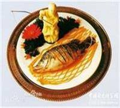
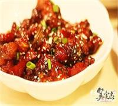
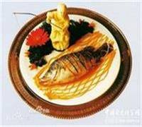
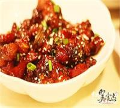
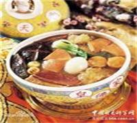
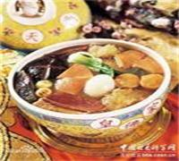
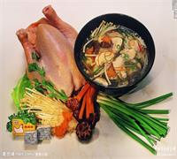
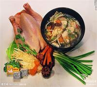

二十四大制造工艺
1.炒。炒是最基本的烹饪技法.其原料一般是片，丝，丁，条，块，炒时要用旺火，要热锅热油，所用底油多少随料而定依照材料、火候、油温高低的不同，可分为生炒、滑炒。熟炒及干炒等方法.
2.爆。爆就是急，速，烈的意思，加热时间极短.烹制出的菜肴脆嫩鲜爽.爆法主要用于烹制脆性，韧性原料，如肚子，鸡肫，鸭肫，鸡鸭肉，瘦猪肉，牛羊肉等.常用的爆法主要为：油爆，芜爆，葱爆，酱爆等.
3.熘。熘是用旺火急速烹调的一种方法.熘法一般是先将原料经过油炸或开水氽熟后，另起油锅调制卤汁，卤汁也有不经过油制而以汤汁调制而成的),然后将处理好的原料放入调好的卤汁中搅拌或将卤汁浇淋于处理好的原料表面.
4.炸。炸是一种旺火，多油，无汁的烹调方法.炸有很多种，如清炸，干炸，软炸，酥炸，面包渣炸，纸包炸，脆炸，油浸，油淋等.
5.烹。烹分为两种：以鸡，鸭，鱼，虾，肉类为料的烹，一般是把挂糊的或不挂糊的片，丝，块，段用旺火油先炸一遍，锅中留少许底油置于旺火上，将炸好的主料放入，然后加入单一的调味品,不用淀粉,或加入多种调味品对成的芡汁-淀粉,快速翻炒即成.以蔬菜为主料的烹，可把主料直接用来烹炒，也可把主料用开水烫后再烹炒.
6.煎。煎是先把锅烧热，用少量的油刷一下锅底,然后把加工成型一般为扁型的原料放入锅中，用少量的油箭制成熟的一种烹饪方法.一般是先煎一面，再煎另一面，煎时要不停地晃动锅子，使原料受热均匀，色泽一致.
7.贴。贴是把几种粘合在一起的原料挂糊之后，下锅只贴一面，使其一面黄脆，而另一面鲜嫩的烹饪方法.它与煎的区别在于，贴只煎主料的一面，而煎是两面。8.烧。烧是先将主料进行一次或两次以上的热处理之后，加入汤(或水)和调料，先用大火烧开，再改用小火慢烧至或酥烂(肉类，海味),或软嫩(鱼类，豆腐),或鲜嫩蔬菜的一种烹调方法.由于烧菜的口味，色泽和汤汁多寡的不同，它又分为红烧，白烧，干烧，酱烧，葱烧，辣烧等许多种.
8.焖。焖是将锅置于微火上加锅盖把菜焖熟的一种烹饪方法.操作过程与烧很相似，但小火加热的时间更长，火力也跟小，一般在半小时以上.
9.炖。炖和烧相似，所不同的是，炖制菜的汤汁比烧菜的多.炖先用葱，姜炝锅，再冲入汤或水，烧开后下主料，先大火烧开，再小火慢炖.炖菜的主料要求软烂，一般是咸鲜味.
10.蒸。蒸是以水蒸气为导热体，将经过调味的原料，用旺火或中火加热，使成菜熟嫩或酥烂的一种烹调方法.常见的蒸法有干蒸，清蒸，粉蒸等几种.
11.氽。氽既是对有些烹饪原料进行出水处理的方法，也是一种制作菜肴的烹调方法.氽菜的主料多是细小的片，丝，花刀型或丸子，而且成品汤多.氽属旺火速成的烹调方法。
12.卷是以菜叶，蛋皮，面皮，花瓣等作为卷皮，卷入各种馅料后，裹成圆筒或椭圆形后，再蒸或炸的一种烹调方法.
13.氽既是对有些烹饪原料进行出水处理的方法，也是一种制作菜肴的烹调方法.氽菜的主料多是细小的片，丝，花刀型或丸子，而且成品汤多.氽属旺火速成的烹调方法.
14.煮和氽相似，但煮比氽的时间长.煮是把主料放于多量的汤汁或清水中，先用大火烧开，再用中火或小火慢慢煮熟的一种烹调方法.
15.烩是将汤和菜混合起来的一种烹调方法.用葱，姜炝锅或直接以汤烩制，调好味再用水淀粉勾芡.烩菜的汤与主料相等或略多于主料.
16.炝是把切配好的生料，经过水烫或油滑，加上盐，味精，花椒油拌和的一种冷菜烹调方法.
17.腌是冷菜的一种烹饪方法，是把原料在调味卤汁中浸渍，或用调味品加以涂抹，使原料中部分水分排出，调料渗入其中，腌的方法很多，常用的有盐腌，糟腌，醉腌.
18.拌也是一种烹饪方法，操作时把生料或熟料切成丝，条，片，块等，再加上调味料拌和即成.
19.烤是把食物原料放在烤炉中利用辐射热使之成熟的一种烹饪方法.烤制的菜肴，由于原料是在干燥的热空气烘烤下成熟的，表面水分蒸发，凝成一层脆皮，原料内部水分不能继续蒸发，因此成菜形状整齐，色泽光滑，外脆里嫩，别有风味.
20.卤是把原料洗净后，放入调制好的卤汁中烧煮成熟，让卤汁渗入其中，晾凉后食用的一种冷菜的一种冷菜烹调方法.
21.冻是一种利用动物原料的胶原蛋白经过蒸煮之后充分溶解，冷却后能结成冻的一种冷菜烹调方一种冷菜烹调方法.
22.拔丝是将糖(冰糖或白糖)加油或水熬到一定的火候，然后放入炸过的食物翻炒，吃时能拔出糖丝的一种烹调方法.
23.蜜汁是一种把糖和蜂蜜加适量的水熬制而成的浓汁,浇在蒸熟或煮熟的主料上的一种烹调方法.
24.熏是将已经处理熟的的主料，用烟加以熏制的一种烹调方法.
 




 

 
